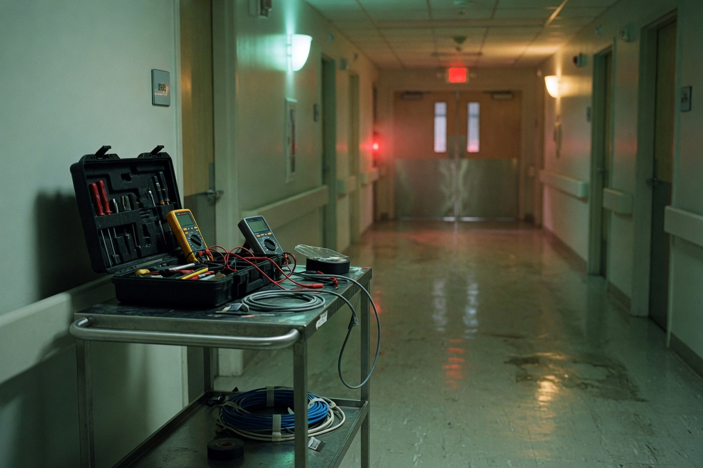
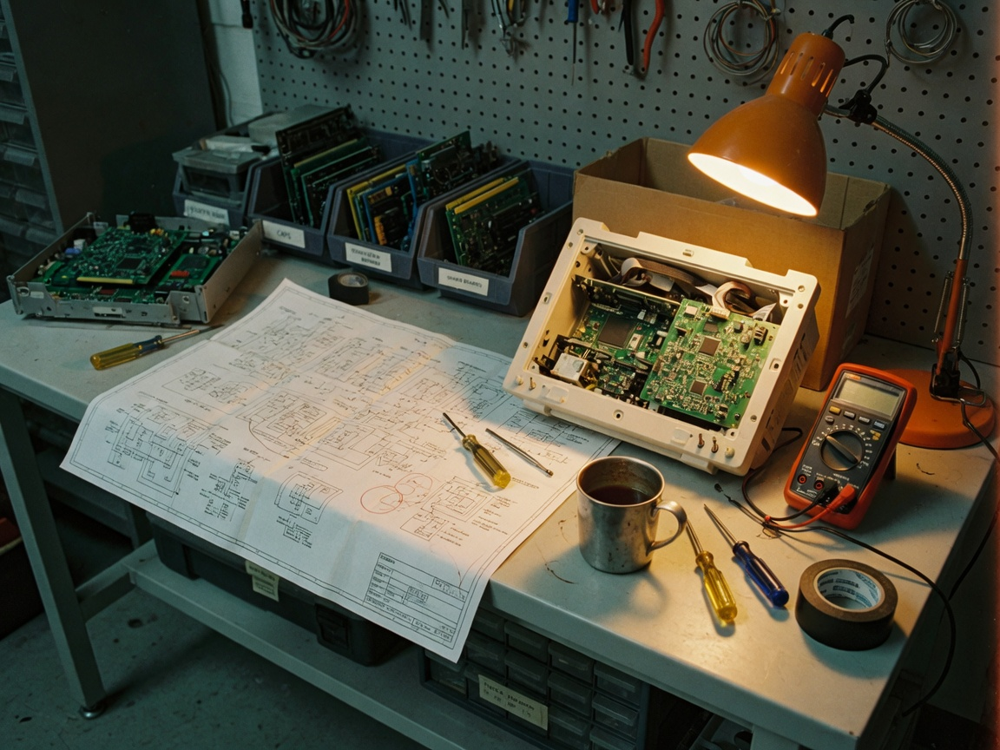
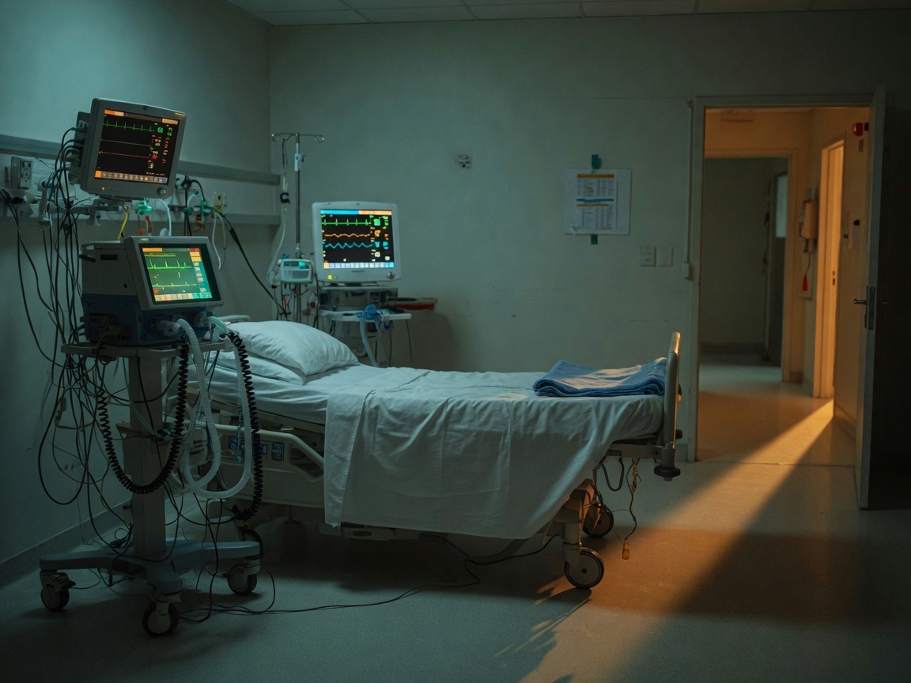
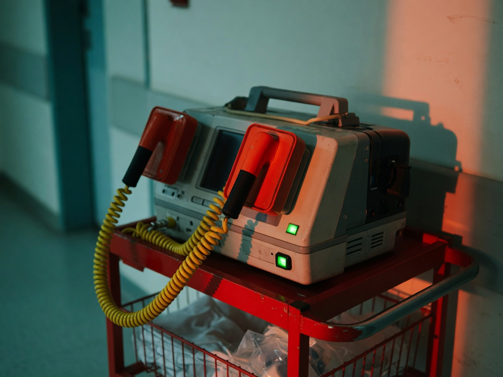

Calm. Honesty. The patient first.
They do not need Shakespeare. They need a man who stays calm when a monitor fails, who says “I don’t know yet” instead of guessing, and who never sends a bad machine back to the floor.

You are not afraid of the machine.
Tonight we walk the floor.
You have been inside machines for years. A hospital interview has two tests: the job, and English. You already pass the first. Tonight we make the second small enough to say.
They do not need Shakespeare. They need a man who stays calm when a monitor fails, who says “I don’t know yet” instead of guessing, and who never sends a bad machine back to the floor.
Could you repeat that, please?
That’s a good question. Let me think.
My English is not perfect yet, but I can do this job.
You are an electrical engineer. That is true. You are also a biomedical engineer. In a hospital, that second title is the one they came to hear.
Short. Present simple. End with ambition, not apology.
My name is Rubén, and I am 53 years old.
I am a biomedical engineer from Cuba.
I am also an electrical engineer. I take care of medical equipment.
Now I work at a clinic, and I am ready for a hospital.
Biomedical equipment technician. Many hospital ads say this, not “engineer.” If they say BMET, you can answer: Yes. I install, check, and repair medical equipment.
Yes. I install, check, and repair medical equipment.
A clinic interview asks “what do you do.” A hospital interview asks if you know the difference between a check, a repair, and a true number.

A scheduled check, before a problem. Clean, test, replace a part that is tired. Hospitals love this word. They will say PM.
Preventive maintenance is before a problem.
The machine already failed. You find the fault. Easy things first: power, cables, the screen. Then the inside.
Repair is after a problem. Easy things first.
The numbers must be true. A pump that says 50 milliliters must give 50. A monitor that says 120 must be 120. Wrong numbers hurt people.
Calibration means the numbers are true.
I check it, I repair it, I install it, and I write it down.
Clinic first, then hospital. You do not need to know every brand. You need the names.
This is the question that hires biomedical people. Not “are you smart.” “What do you do when a life-support machine dies in front of a doctor.”

Tap 1, then 2, then 3, then 4.
First, I stay calm and I go fast. I check the power and the connections. If I can’t repair it quickly, I get a backup or I call for support. I tell the doctor. Patient safety is always first.

Hospitals will ask: “What if a device fails electrical safety?” The only adult answer is: it does not return to the patient. You tag it. You repair it. You test it again.
If a machine fails a safety test, it does not go back to the floor. I never skip a safety test.
A silent engineer is a dangerous engineer. The doctor needs to know: is it two minutes, or is it down?
I tell the doctor immediately. Communication is also safety.
Not “what is your favorite color.” These come from real BMET and clinical-engineering interviews. Short answers. Your English is enough.
¿Por qué quieres trabajar en este hospital?
A hospital has more equipment and more technology than my clinic. I want to learn and grow. My experience can help your team.
¿Cómo diagnosticas una falla?
First I listen to the nurse. Then I look: power, cables, the screen. Easy things first. Then the inside. Then I test it, and I write it down.
¿Cuál es la diferencia entre PM y calibración?
PM is a scheduled check, before a problem. Calibration means the numbers are true. Both are safety.
¿Conoces nuestra marca de ventiladores?
Not yet. But I can learn it fast, with the manual.
¿Cómo hablas con una enfermera que está asustada?
I stay calm. I listen. I tell her what I will do, and when the machine will be ready.
Asking is interest. Silence looks like fear.
What equipment does the hospital use? How big is the maintenance team?
These sentences are short on purpose. A1+ that sounds like a professional beats B1 that collapses.
My name is Rubén. I am a biomedical engineer from Cuba. I take care of medical equipment. Patient safety is always first. If I don’t know a machine, I read the manual and I learn fast.
Green means you understood it. You can miss and try again. No mercy, no mockery.
Four sentences in English. You can still be afraid. You just have to sound like a man who walked the floor.
1. Who are you?
2. What do you do with machines?
3. What do you do when a machine is down?
4. Why this hospital?
Saved on this phone. Read it out loud to Gabriel.
The machine will fail. Your English does not have to. Calm, honest, patient first — then the next sentence.
ARCHES · Rubén · The Floor · 2026-08-27